Figure fig_ch02_p021_01 (Page 21)
Figure fig_ch02_p021_02 (Page 21)
Figure fig_ch02_p021_03 (Page 21)
Figure fig_ch02_p021_04 (Page 21)
Figure fig_ch02_p021_05 (Page 21)
Figure fig_ch02_p021_06 (Page 21)
Figure fig_ch02_p021_07 (Page 21)
Figure fig_ch02_p021_08 (Page 21)
Figure fig_ch02_p022_01 (Page 22)
Figure fig_ch02_p022_02 (Page 22)
 Figure fig_ch02_p022_04 (Page 22)
Figure fig_ch02_p022_06 (Page 22)
Figure fig_ch02_p022_04 (Page 22)
Figure fig_ch02_p022_06 (Page 22)
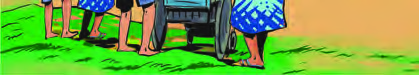
Figure fig_ch02_p022_07 (Page 22)
Figure fig_ch02_p022_08 (Page 22)
Figure fig_ch02_p022_10 (Page 22)
Figure fig_ch02_p022_12 (Page 22)
Figure fig_ch02_p022_13 (Page 22)
Figure fig_ch02_p022_14 (Page 22)
Figure fig_ch02_p023_01 (Page 23)
Figure fig_ch02_p023_02 (Page 23)
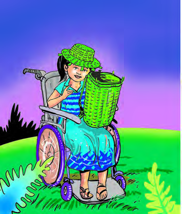
Figure fig_ch02_p023_03 (Page 23)
Figure fig_ch02_p023_05 (Page 23)
Figure fig_ch02_p023_06 (Page 23)
Figure fig_ch02_p023_07 (Page 23)
Figure fig_ch02_p023_09 (Page 23)
Figure fig_ch02_p024_01 (Page 24)
Figure fig_ch02_p024_02 (Page 24)
Figure fig_ch02_p024_05 (Page 24)
Figure fig_ch02_p024_06 (Page 24)
 Figure fig_ch02_p024_07 (Page 24)
Figure fig_ch02_p024_08 (Page 24)
Figure fig_ch02_p024_09 (Page 24)
Figure fig_ch02_p024_07 (Page 24)
Figure fig_ch02_p024_08 (Page 24)
Figure fig_ch02_p024_09 (Page 24)
Figure fig_ch02_p025_01 (Page 25)
Figure fig_ch02_p025_02 (Page 25)
Figure fig_ch02_p025_03 (Page 25)
Figure fig_ch02_p025_04 (Page 25)
Figure fig_ch02_p025_05 (Page 25)
Figure fig_ch02_p025_08 (Page 25)
 Figure fig_ch02_p025_09 (Page 25)
Figure fig_ch02_p025_10 (Page 25)
Figure fig_ch02_p025_09 (Page 25)
Figure fig_ch02_p025_10 (Page 25)
Figure fig_ch02_p026_01 (Page 26)
Figure fig_ch02_p026_02 (Page 26)
Figure fig_ch02_p026_03 (Page 26)
Figure fig_ch02_p026_04 (Page 26)
Figure fig_ch02_p026_05 (Page 26)
 Figure fig_ch02_p027_01 (Page 27)
Figure fig_ch02_p027_02 (Page 27)
Figure fig_ch02_p027_01 (Page 27)
Figure fig_ch02_p027_02 (Page 27)
Figure fig_ch02_p028_01 (Page 28)
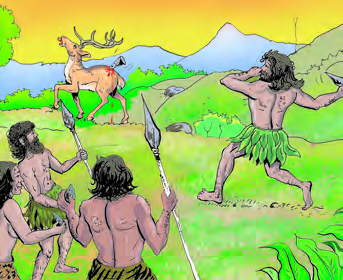
Figure fig_ch02_p028_02 (Page 28)
Figure fig_ch02_p028_03 (Page 28)
 Figure fig_ch02_p028_04 (Page 28)
Figure fig_ch02_p028_05 (Page 28)
Figure fig_ch02_p028_06 (Page 28)
Figure fig_ch02_p028_04 (Page 28)
Figure fig_ch02_p028_05 (Page 28)
Figure fig_ch02_p028_06 (Page 28)
 Figure fig_ch02_p028_07 (Page 28)
Figure fig_ch02_p028_09 (Page 28)
Figure fig_ch02_p028_07 (Page 28)
Figure fig_ch02_p028_09 (Page 28)
 Figure fig_ch02_p028_10 (Page 28)
Figure fig_ch02_p028_10 (Page 28)
Figure fig_ch02_p029_01 (Page 29)
Figure fig_ch02_p029_02 (Page 29)
Figure fig_ch02_p029_03 (Page 29)
Figure fig_ch02_p029_04 (Page 29)
Figure fig_ch02_p029_05 (Page 29)
Figure fig_ch02_p029_06 (Page 29)
Figure fig_ch02_p029_07 (Page 29)
Figure fig_ch02_p029_08 (Page 29)
Figure fig_ch02_p029_09 (Page 29)
Figure fig_ch02_p029_10 (Page 29)
Figure fig_ch02_p029_11 (Page 29)
Figure fig_ch02_p029_13 (Page 29)
Figure fig_ch02_p030_01 (Page 30)
Figure fig_ch02_p030_02 (Page 30)
Figure fig_ch02_p030_03 (Page 30)
Figure fig_ch02_p030_04 (Page 30)
Figure fig_ch02_p030_05 (Page 30)
Figure fig_ch02_p030_06 (Page 30)
Figure fig_ch02_p030_07 (Page 30)
Figure fig_ch02_p030_09 (Page 30)
Figure fig_ch02_p030_10 (Page 30)
Figure fig_ch02_p030_11 (Page 30)
Figure fig_ch02_p030_12 (Page 30)
Figure fig_ch02_p030_13 (Page 30)
Figure fig_ch02_p030_14 (Page 30)
Figure fig_ch02_p031_01 (Page 31)
 Figure fig_ch02_p031_02 (Page 31)
Figure fig_ch02_p031_03 (Page 31)
Figure fig_ch02_p031_04 (Page 31)
Figure fig_ch02_p031_05 (Page 31)
Figure fig_ch02_p031_07 (Page 31)
Figure fig_ch02_p031_08 (Page 31)
Figure fig_ch02_p031_09 (Page 31)
Figure fig_ch02_p031_10 (Page 31)
Figure fig_ch02_p031_11 (Page 31)
Figure fig_ch02_p031_02 (Page 31)
Figure fig_ch02_p031_03 (Page 31)
Figure fig_ch02_p031_04 (Page 31)
Figure fig_ch02_p031_05 (Page 31)
Figure fig_ch02_p031_07 (Page 31)
Figure fig_ch02_p031_08 (Page 31)
Figure fig_ch02_p031_09 (Page 31)
Figure fig_ch02_p031_10 (Page 31)
Figure fig_ch02_p031_11 (Page 31)
Figure fig_ch02_p032_01 (Page 32)
Figure fig_ch02_p032_04 (Page 32)
Figure fig_ch02_p032_05 (Page 32)
Figure fig_ch02_p032_09 (Page 32)
Figure fig_ch02_p032_10 (Page 32)
Figure fig_ch02_p032_13 (Page 32)
Figure fig_ch02_p032_15 (Page 32)
Figure fig_ch02_p032_19 (Page 32)
Figure fig_ch02_p032_20 (Page 32)
Figure fig_ch02_p032_21 (Page 32)
Figure fig_ch02_p032_22 (Page 32)
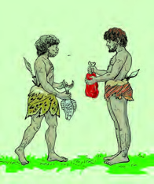
Figure fig_ch02_p032_23 (Page 32)
Figure fig_ch02_p033_02 (Page 33)
Figure fig_ch02_p033_03 (Page 33)
Figure fig_ch02_p033_05 (Page 33)
Figure fig_ch02_p033_06 (Page 33)
Figure fig_ch02_p033_07 (Page 33)
Figure fig_ch02_p033_08 (Page 33)
Figure fig_ch02_p033_09 (Page 33)
Figure fig_ch02_p033_10 (Page 33)
Figure fig_ch02_p033_11 (Page 33)
Figure fig_ch02_p033_12 (Page 33)
 Figure fig_ch02_p033_13 (Page 33)
Figure fig_ch02_p033_14 (Page 33)
Figure fig_ch02_p033_15 (Page 33)
Figure fig_ch02_p033_16 (Page 33)
Figure fig_ch02_p033_17 (Page 33)
Figure fig_ch02_p033_18 (Page 33)
Figure fig_ch02_p033_19 (Page 33)
Figure fig_ch02_p033_20 (Page 33)
Figure fig_ch02_p033_21 (Page 33)
Figure fig_ch02_p033_22 (Page 33)
Figure fig_ch02_p033_23 (Page 33)
Figure fig_ch02_p033_24 (Page 33)
Figure fig_ch02_p033_13 (Page 33)
Figure fig_ch02_p033_14 (Page 33)
Figure fig_ch02_p033_15 (Page 33)
Figure fig_ch02_p033_16 (Page 33)
Figure fig_ch02_p033_17 (Page 33)
Figure fig_ch02_p033_18 (Page 33)
Figure fig_ch02_p033_19 (Page 33)
Figure fig_ch02_p033_20 (Page 33)
Figure fig_ch02_p033_21 (Page 33)
Figure fig_ch02_p033_22 (Page 33)
Figure fig_ch02_p033_23 (Page 33)
Figure fig_ch02_p033_24 (Page 33)
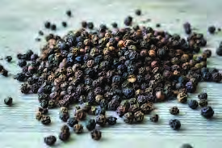
Figure fig_ch02_p033_25 (Page 33)
Figure fig_ch02_p033_26 (Page 33)
Figure fig_ch02_p033_27 (Page 33)
Figure fig_ch02_p033_29 (Page 33)
Figure fig_ch02_p033_30 (Page 33)
Figure fig_ch02_p033_31 (Page 33)
Figure fig_ch02_p033_32 (Page 33)
Figure fig_ch02_p033_33 (Page 33)
Figure fig_ch02_p033_34 (Page 33)
Figure fig_ch02_p033_35 (Page 33)
Figure fig_ch02_p033_36 (Page 33)
Figure fig_ch02_p033_37 (Page 33)
Figure fig_ch02_p033_38 (Page 33)
Figure fig_ch02_p033_39 (Page 33)
Figure fig_ch02_p033_40 (Page 33)
Figure fig_ch02_p033_41 (Page 33)
Figure fig_ch02_p033_42 (Page 33)
Figure fig_ch02_p033_43 (Page 33)
Figure fig_ch02_p033_44 (Page 33)
Figure fig_ch02_p033_45 (Page 33)
Figure fig_ch02_p033_46 (Page 33)
Figure fig_ch02_p033_47 (Page 33)
Figure fig_ch02_p033_48 (Page 33)
Figure fig_ch02_p033_49 (Page 33)
Figure fig_ch02_p033_50 (Page 33)
Figure fig_ch02_p033_51 (Page 33)
Figure fig_ch02_p033_52 (Page 33)
 Figure fig_ch02_p033_53 (Page 33)
Figure fig_ch02_p033_54 (Page 33)
Figure fig_ch02_p033_55 (Page 33)
Figure fig_ch02_p033_56 (Page 33)
Figure fig_ch02_p033_57 (Page 33)
Figure fig_ch02_p033_58 (Page 33)
Figure fig_ch02_p033_59 (Page 33)
Figure fig_ch02_p033_60 (Page 33)
Figure fig_ch02_p033_61 (Page 33)
Figure fig_ch02_p033_62 (Page 33)
Figure fig_ch02_p033_63 (Page 33)
Figure fig_ch02_p033_64 (Page 33)
Figure fig_ch02_p033_53 (Page 33)
Figure fig_ch02_p033_54 (Page 33)
Figure fig_ch02_p033_55 (Page 33)
Figure fig_ch02_p033_56 (Page 33)
Figure fig_ch02_p033_57 (Page 33)
Figure fig_ch02_p033_58 (Page 33)
Figure fig_ch02_p033_59 (Page 33)
Figure fig_ch02_p033_60 (Page 33)
Figure fig_ch02_p033_61 (Page 33)
Figure fig_ch02_p033_62 (Page 33)
Figure fig_ch02_p033_63 (Page 33)
Figure fig_ch02_p033_64 (Page 33)
Figure fig_ch02_p034_01 (Page 34)
Figure fig_ch02_p034_02 (Page 34)
Figure fig_ch02_p034_05 (Page 34)
Figure fig_ch02_p034_06 (Page 34)
Figure fig_ch02_p034_07 (Page 34)
Figure fig_ch02_p034_08 (Page 34)
Figure fig_ch02_p034_09 (Page 34)
Figure fig_ch02_p034_10 (Page 34)
Figure fig_ch02_p034_11 (Page 34)
Figure fig_ch02_p034_12 (Page 34)
Figure fig_ch02_p034_14 (Page 34)
Figure fig_ch02_p034_15 (Page 34)
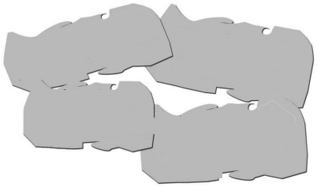
Figure fig_ch02_p036_01 (Page 36)
Figure fig_ch02_p036_02 (Page 36)
Figure fig_ch02_p036_03 (Page 36)
 Figure fig_ch02_p037_01 (Page 37)
Figure fig_ch02_p037_02 (Page 37)
Figure fig_ch02_p037_01 (Page 37)
Figure fig_ch02_p037_02 (Page 37)
 Figure fig_ch02_p037_03 (Page 37)
Figure fig_ch02_p037_04 (Page 37)
Figure fig_ch02_p037_05 (Page 37)
Figure fig_ch02_p037_06 (Page 37)
Figure fig_ch02_p037_07 (Page 37)
Figure fig_ch02_p037_08 (Page 37)
Figure fig_ch02_p037_09 (Page 37)
Figure fig_ch02_p037_10 (Page 37)
Figure fig_ch02_p037_12 (Page 37)
Figure fig_ch02_p037_13 (Page 37)
Figure fig_ch02_p037_15 (Page 37)
Figure fig_ch02_p037_17 (Page 37)
Figure fig_ch02_p037_18 (Page 37)
Figure fig_ch02_p037_03 (Page 37)
Figure fig_ch02_p037_04 (Page 37)
Figure fig_ch02_p037_05 (Page 37)
Figure fig_ch02_p037_06 (Page 37)
Figure fig_ch02_p037_07 (Page 37)
Figure fig_ch02_p037_08 (Page 37)
Figure fig_ch02_p037_09 (Page 37)
Figure fig_ch02_p037_10 (Page 37)
Figure fig_ch02_p037_12 (Page 37)
Figure fig_ch02_p037_13 (Page 37)
Figure fig_ch02_p037_15 (Page 37)
Figure fig_ch02_p037_17 (Page 37)
Figure fig_ch02_p037_18 (Page 37)
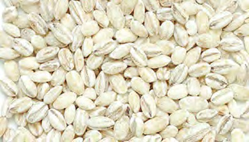
Figure fig_ch02_p038_01 (Page 38)
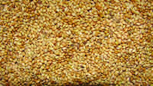
Figure fig_ch02_p038_02 (Page 38)
Figure fig_ch02_p038_03 (Page 38)
Figure fig_ch02_p038_04 (Page 38)
Figure fig_ch02_p038_05 (Page 38)
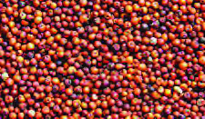
Figure fig_ch02_p038_06 (Page 38)
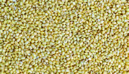
Figure fig_ch02_p038_07 (Page 38)
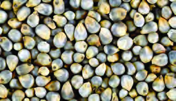
Figure fig_ch02_p038_08 (Page 38)
Figure fig_ch02_p038_09 (Page 38)
Figure fig_ch02_p038_10 (Page 38)
Figure fig_ch02_p038_11 (Page 38)
Figure fig_ch02_p039_01 (Page 39)
 Figure fig_ch02_p040_01 (Page 40)
Figure fig_ch02_p040_01 (Page 40)
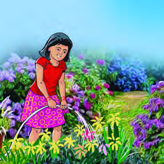
Figure fig_ch02_p040_02 (Page 40)
Figure fig_ch02_p040_03 (Page 40)
Figure fig_ch02_p040_04 (Page 40)
Figure fig_ch02_p040_05 (Page 40)
Figure fig_ch02_p040_06 (Page 40)
Figure fig_ch02_p040_07 (Page 40)
Figure fig_ch02_p040_08 (Page 40)
Figure fig_ch02_p040_09 (Page 40)
Figure fig_ch02_p040_10 (Page 40)
Figure fig_ch02_p040_11 (Page 40)